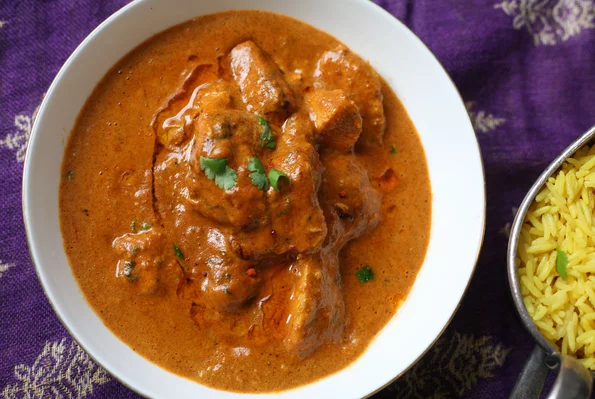

Italian Chicken Cacciatore

Description
Chicken cacciatore is a classic Mediterranean chicken dish from Italy. This is my favorite recipe made with chicken thighs, tomatoes, herbs, and olives.
Ingredients
- ¼ cup olive oil, divided
- 1 onion, diced
- ¼ cup all-purpose flour
- ½ teaspoon salt
- ¼ teaspoon freshly ground black pepper
- 8 chicken thighs
- ½ cup dry white wine
- 2 (14.5 ounce) cans diced tomatoes
- 2 teaspoons tomato paste
- ¼ teaspoon white sugar, or more to taste
- salt and ground black pepper to taste
- ½ cup chicken broth, or more as needed
- ½ cup black olives, pitted
- 1 tablespoon chopped fresh parsley
- 1 tablespoon torn basil leaves
Steps
- Heat 2 tablespoons olive oil in a skillet over medium heat and cook onion, stirring often, until soft and translucent, about 5 minutes. Transfer to a pot.
- Combine flour, 1/2 teaspoon salt, and 1/4 teaspoon pepper in a large bowl. Toss chicken thighs in the flour mixture until evenly coated.
- Heat remaining 2 tablespoons olive oil in the skillet over medium heat, add chicken thighs, and brown on one side, without turning, for 5 minutes. Turn and cook until browned on the other side, about 5 minutes more. Transfer browned chicken thighs to the pot.
- Pour white wine into the skillet; bring to a boil. Stir to loosen all the browned bits of chicken and flavors in the skillet pour into the pot. Add diced tomatoes, tomato paste, and sugar; season with salt and pepper. Add as much chicken stock as needed to cover the chicken. Cover pot and simmer over medium heat, stirring occasionally, until chicken is no longer pink in the center, about 45 minutes.
- Stir in olives, parsley, and basil. Stir to heat through.